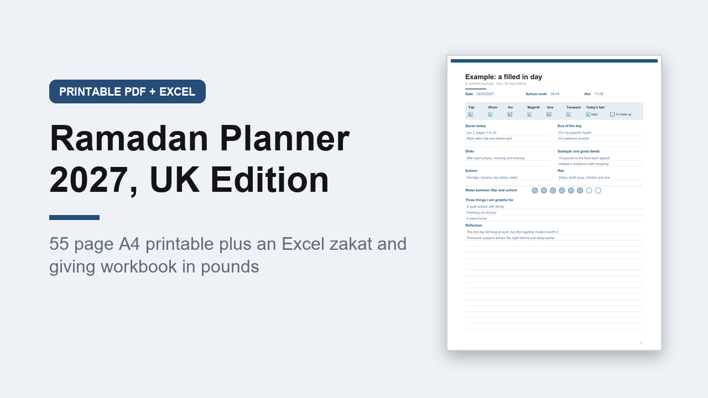

Ramadan Planner 2027 UK, Printable A4 PDF with Excel Zakat Calculator in GBP
GBP 6.00 · instant digital download

A Ramadan 2027 planner made for the UK: A4 paper, UK spelling, and a zakat and giving workbook in pounds with Gift Aid.
Ramadan is expected to begin around 8 February 2027, so the daily pages are numbered Day 1 to 30 and left undated for the moon sighting.
What you get: 2 files.
1.
A printable A4 PDF, 55 pages, not editable, you print it and write on it.
Inside: how to use, before you begin, a getting ready checklist, goals, key dates, February and March 2027 month pages, a 30 day tracker, a 30 juz Quran tracker, a filled in example day, 30 daily pages (suhoor and iftar times, five prayers and taraweeh, fast kept or to make up, Quran, dua, dhikr, sadaqah, meals, water, gratitude and reflection), 4 weekly meal plans, a shopping list, an iftar hosting planner, guests, the last ten nights, an Eid al-Fitr checklist, Eid gifts and Eidi, a giving record, a paper zakat worksheet, an after Ramadan page with the six fasts of Shawwal, and notes.
2.
An editable Excel workbook (.xlsx) with 5 sheets: Start here, Summary, Zakat (silver or gold nisab, your own price per gram, Zakat al-Fitr), Giving Log (with Gift Aid) and Eid Gifts.
A worked example is filled in.
Opens in Excel, Google Sheets and Numbers.
An organiser only, not religious advice and not financial advice.
Digital download, nothing is posted..
What happens after you buy
Payment and delivery are handled by Gumroad. You get the download straight after paying, and a copy of the link by email. Nothing is posted to you.
Tags: ramadan planner, ramadan 2027, zakat calculator, ramadan printable, ramadan journal, eid planner, quran tracker, a4 printable, uk planner, islamic planner